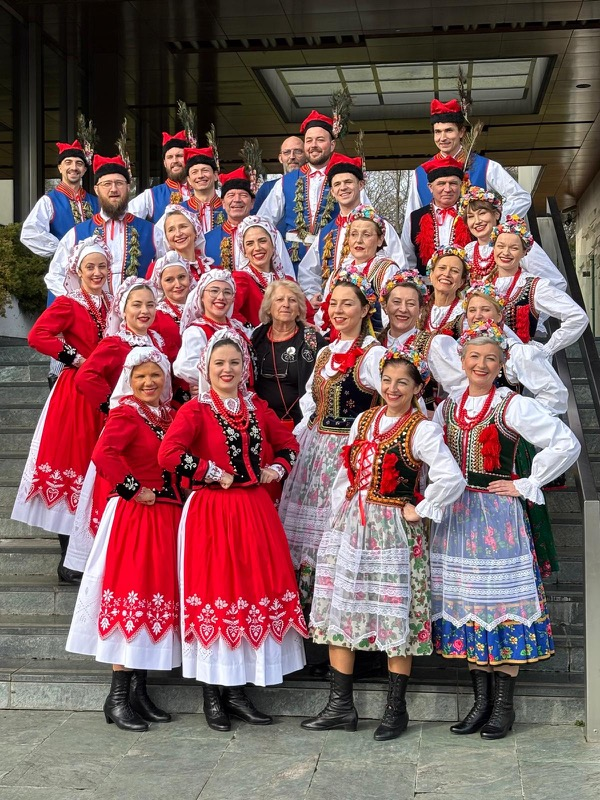
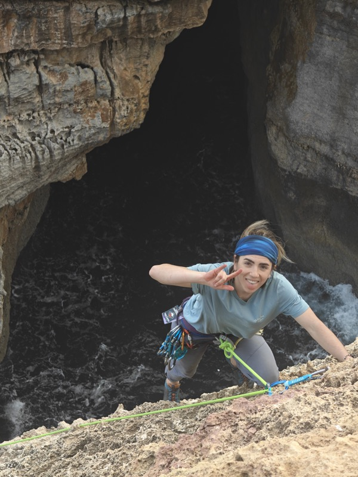
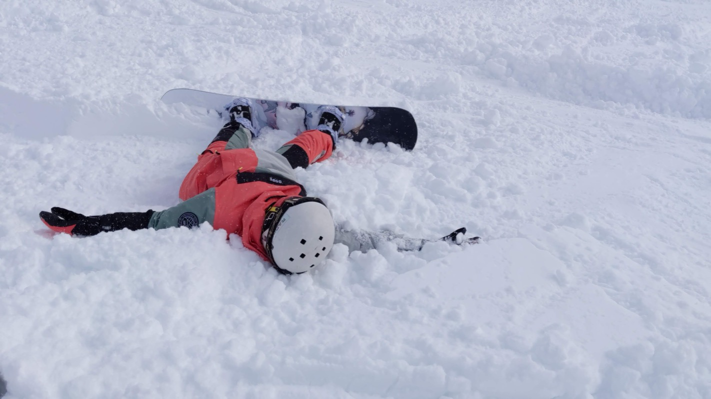
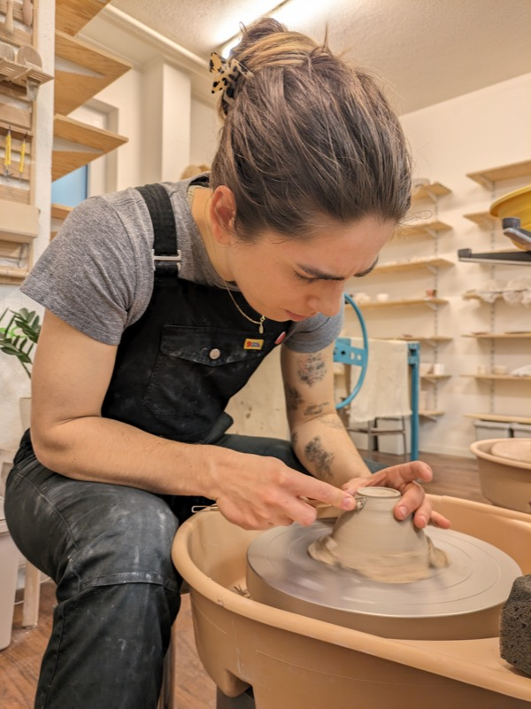
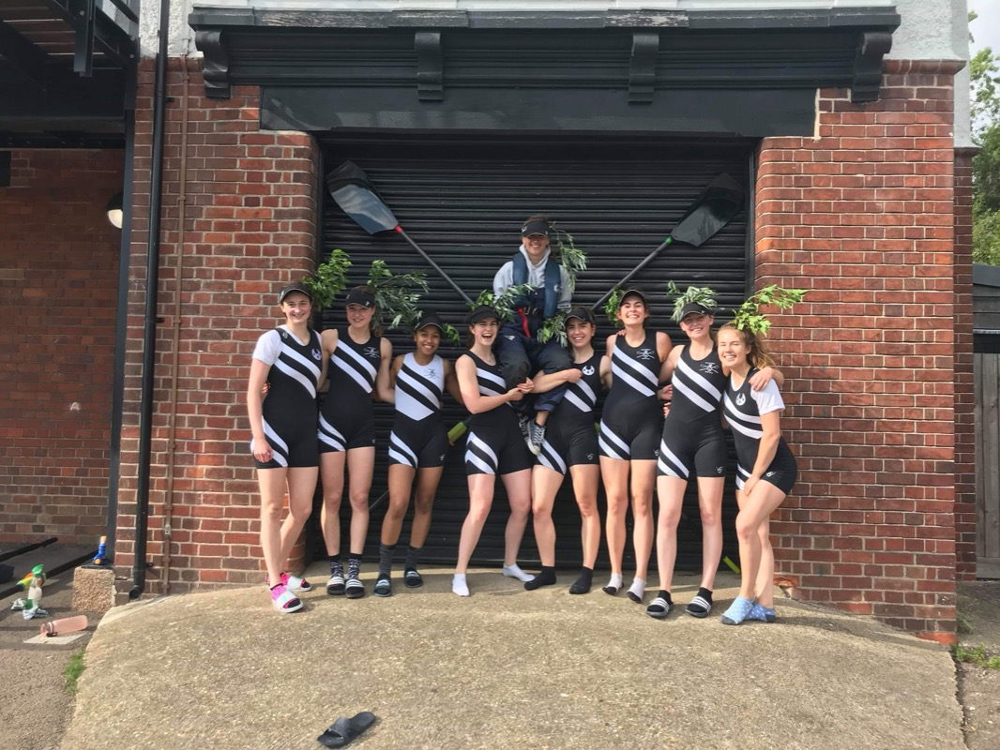
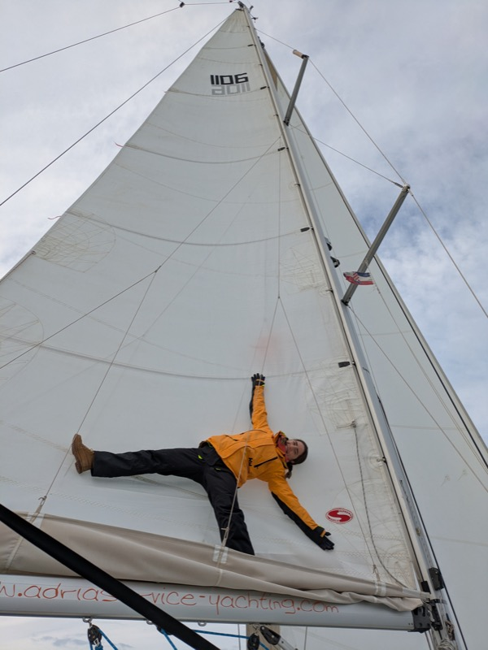

AboutO mnie
I am good at giving things shape: taking a tangle of ideas and turning it into a clear structure, then a plan. Give me a target and I'll make sure we hit it.Świetnie nadaję ideom realny kształt: umiem ujarzmić plątaninę pomysłów i zmienić ją w jasną strukturę, a potem w plan działania. Daj mi cel, a dopilnuję, że go osiągniemy.
I learn fast and like working right at the edge of what I know. I am at my best in a team warm enough for colleagues to become friends, and I love to bring in the energy to make that happen.Szybko się uczę i lubię nabywać nowe umiejętności. Najlepiej czuję się w zespołach, w których panuje ciepła atmosfera wspólnego wsparcia i zaufania, a moja obecność wnosi energię, która to umożliwia.
What I've been up to at workCzym zajmuję się zawodowo
Senior Product Manager, Senior Product Managerka, Snyk
Driving product on Evo, Snyk's AI security platform, specifically on agentic behavioral governance and AI red teaming. Taking new product areas through our incubator, enabling engineering squads to deliver quickly, and coordinating across several teams from idea to validation and launch.Prowadzę produkt w Evo, platformie bezpieczeństwa AI od Snyka, ze szczególnym naciskiem na governance zachowań agentów i red teaming AI. Wprowadzam nowe obszary produktowe przez nasz inkubator, umożliwiam zespołom inżynierskim szybkie dostarczanie celów i koordynuję pracę kilku zespołów od pomysłu, przez walidację, po wdrożenie.
Consultant, Konsultantka, McKinsey & Company
Advised clients on AI and operations, built the analysis and recommendations, and presented them to senior leadership. Delivered an AI-driven pricing model with a 3.2pp loss ratio improvement, designed agentic architecture, and built a proof of concept using agents to modernize legacy code.Doradzałam klientom w obszarze AI i operacji, przygotowywałam analizy i rekomendacje oraz prezentowałam je kadrze zarządzającej. Dostarczyłam model wyceny oparty na AI z poprawą loss ratio o 3,2 pp, zaprojektowałam architekturę agentową i zbudowałam proof of concept wykorzystujący agentów do modernizacji starszego kodu.
Side job: Dog care, Side job: Opieka nad psami, Bark&Bone
Ran a Zurich dog daycare, handled hands-on dog care, built close relationships with dog parents, and managed much of the social media. Easily the warmest line on my CV.Prowadziłam dog daycare w Zurychu, zajmowałam się bezpośrednią opieką psów, budowałam bliskie relacje z psimi rodzicami i prowadziłam social media. Bez wątpienia najmilszy wpis w moim CV :)
Engineer and Product Manager, Programistka i Product Managerka, Google Switzerland & Poland
Built large-scale systems for six years, then moved into product, working closely with engineers, clients and leadership.Budowałam systemy na dużą skalę przez sześć lat, a potem przeszłam do produktu, w bliskiej współpracy z inżynierami, klientami i kadrą zarządzającą.
- Gemini Code Assist — joined the early engineering team building an AI-powered IDE plugin and led the enterprise policy enforcement needed to ship it to key Cloud clients. — dołączyłam do wczesnego zespołu inżynierskiego budującego wtyczkę do IDE opartą na AI i prowadziłam enterprise policy enforcement, by wdrożyć ją u kluczowych klientów Cloud.
- YouTube Data and Metadata — owned the product vision for YouTube Metadata and presented it at senior director level; designed the canonical storage and ingestion that now affects every piece of content on YouTube. — odpowiadałam za wizję produktową metadanych YouTube i prezentowałam ją na poziomie senior director; zaprojektowałam canonical storage i data ingestion, które dziś dotyczą każdej treści na YouTube.
- Google Assistant — won the 2022 Google Tech Impact award for work that sped up Assistant and shipped it to Chromecast. — zdobyłam nagrodę Google Tech Impact 2022 za pracę przyspieszającą Asystenta i wdrożyłam ją na Chromecast.
Education, languages and moreWykształcenie, języki i więcej
EducationWykształcenie
- BA Computer Science, University of Cambridge, Trinity Hall
- Postgraduate Diploma in Project Management, Warsaw School of Economics
- Licencjat z informatyki, University of Cambridge, Trinity Hall
- Studia podyplomowe z zarządzania projektami, Szkoła Główna Handlowa w Warszawie
LanguagesJęzyki
- Polish -- native
- English -- native
- German -- advanced
- Italian, Korean, Japanese -- basic
- Polski -- ojczysty
- Angielski -- ojczysty
- Niemiecki -- zaawansowany
- Włoski, koreański, japoński -- podstawowy
Certificates and licensesCertyfikaty i uprawnienia
- Certified Hatha yoga teacher
- Offshore sea skipper
- Licensed dog carer, 500 hours of practice
- Microsoft Project
- Driving licence, category B
- Certyfikowana nauczycielka hatha jogi
- Sternik morski
- Licencjonowana opiekunka psów, 500 godzin praktyki
- Microsoft Project
- Prawo jazdy, kategoria B
Projects I'm proud ofProjecty, z których jestem dumna
- Volunteering at Women in Engineering EMEA conference 2024, Google
- Volunteering at Grace Hopper Celebration 2023
- Współpraca przy organizacji konferencji Women in Engineering EMEA 2024, Google
- Współpraca przy organizacji Grace Hopper Celebration 2023
Beyond workPoza pracą
Right now a lot of my life happens on the dance floor. I dance with Lasowiacy, a Polish folk group here in Zurich, and I love it.Teraz duża część mojego życia dzieje się na parkiecie. Tańczę z Lasowiakami, polskim zespołem folklorystycznym w Zurychu i uwielbiam to.
Rowing shaped me too. I rowed in the first boat and was vice captain at Trinity Hall Boat Club. Proud winner of Blades in the Cambridge Bumps races thanks to which my name is forever painted on the boathouse walls, and I have a three-metre long oar in my flat.Ukształtowało mnie również wioślarstwo. Wiosłowałam w pierwszej osadzie i byłam wicekapitanką w Trinity Hall Boat Club naleącym do University of Cambridge. Z dumą zdobyłam Blades w regatach Cambridge Bumps, dzięki czemu moje nazwisko na zawsze widnieje na ścianie klubu wioślarskiego, a w mieszkaniu musiałam znależć miejsce na trzymetrowe wiosło.
The rest of the time I am making pottery, or outside climbing, snowboarding, sailing, kitesurfing and practising yoga. I like picking up a new skill, sport or language just to see how it works.Resztę czasu lepię w glinie albo uprawiam sport: wspinam się, jeżdżę na snowboardzie, żegluję, uprawiam kitesurfing i jogę. Lubię uczyć się nowych umiejętności, sportów i języków, żeby jak najszerzej doświadczać życia.





